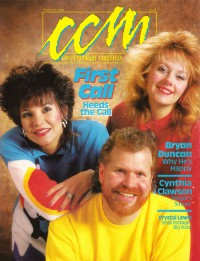

CMnexus: Contemporary Christian culture, music, and media.
|
|
First CallOn the cover|  | February 1988
CCM | Media coverage:- Oct 1986 in CCM "Notebook: A Studio Group In Tune With The Lord", by Sharon Harper
- Feb 1988 in CCM "What Happens When You Heed The Call", by Sharon Harper
- May 1988 in Charisma "Music: A Reason To Sing", by Steve Lawson
- Apr 1990 in CCM "New Faces: Marabeth Jordon / First Call"
- Dec 1990 in CCM "Christmas Our Way", by Steve Rabey
- Mar 1992 in CCM "Singing A Human Song", by Brian Quincy Newcomb
- Jul 1993 in The Lighthouse "First Call", by J. Warner Soditus
- Aug 1993 in CCM "New Journeys", by Holly Halverson
- May 1994 in CCM "In Concert: Tennessee Performing Arts Center, Nashville, TN", by Melanie Friebel
- Dec 1995 in CCM "Under The Tree", by Melissa Riddle
- Oct 1996 in CCM "First Call: Total Recall", by Melissa Riddle
Albums & reviews:1986: Undivided1987: Somethin' Takes Over1987: An Evening In December, Vol. 11987: An Evening In December, Vol. 21989: God Is Good1992: Human Song1993: Sacred Journey1995: Beyond December1996: First Call2006: Rejoice!2006: Christmas Landscapes: An Evening In December Award Summary (Nominations / Wins)Dove Awards1988 Dove Awards1989 Dove Awards1990 Dove Awards1991 Dove Awards1992 Dove AwardsBooks about First Call |